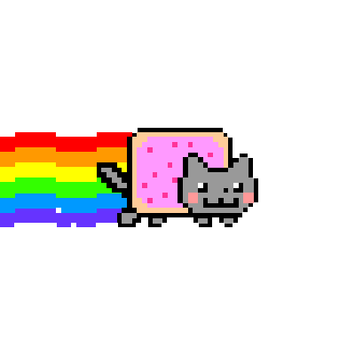
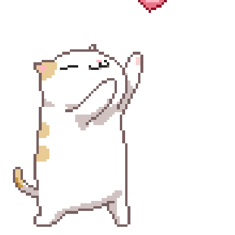
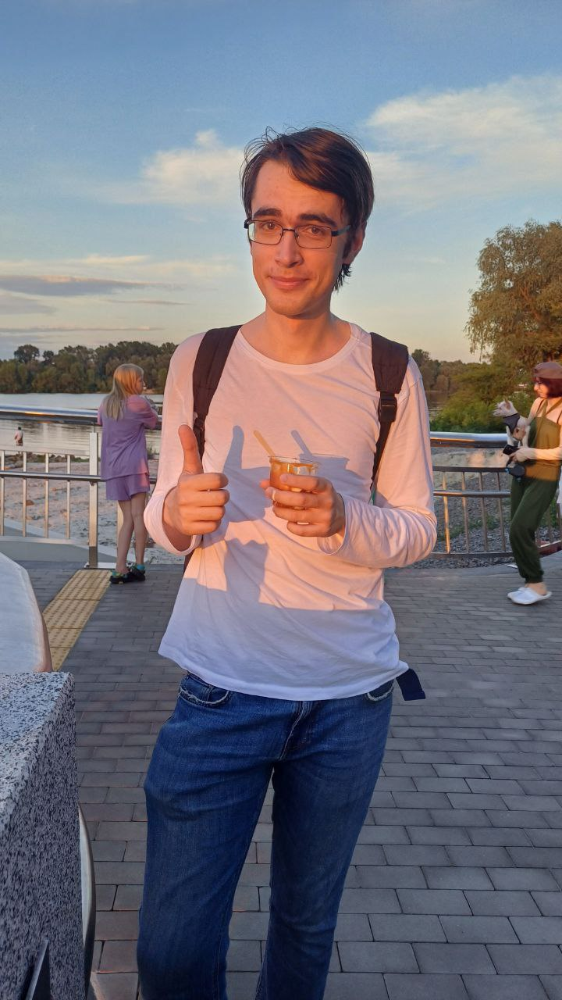
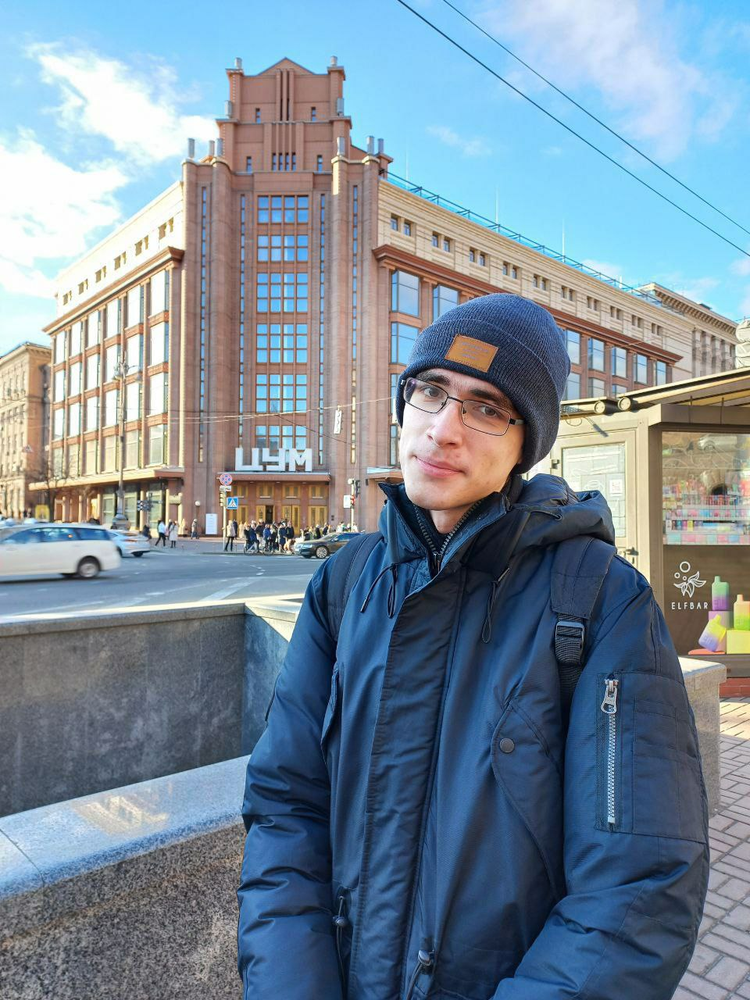
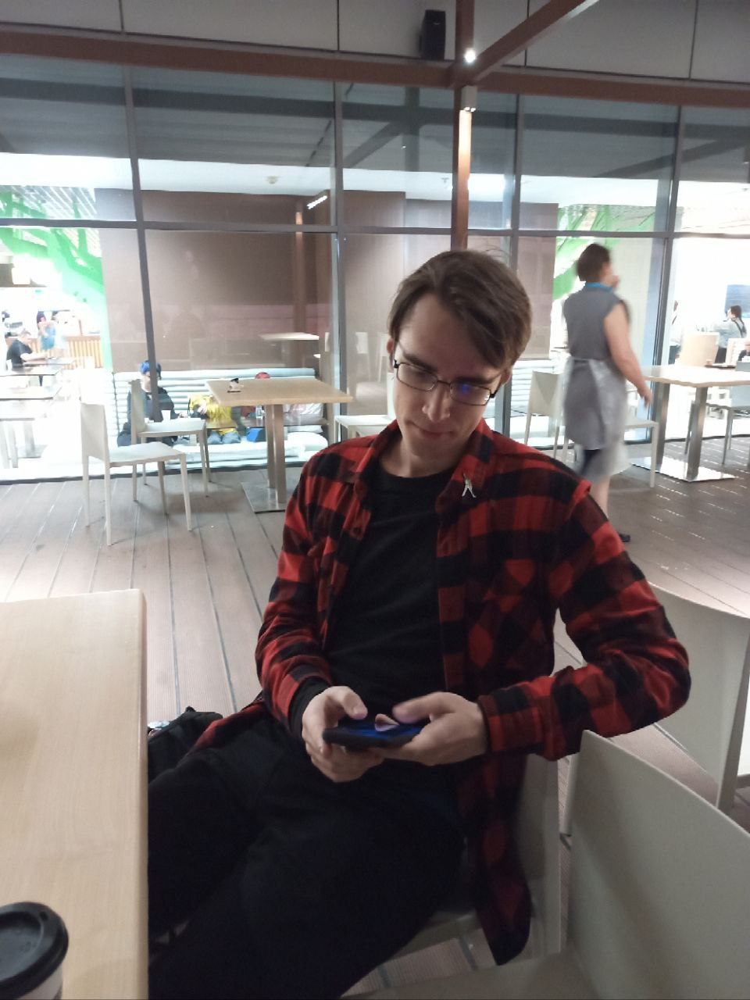
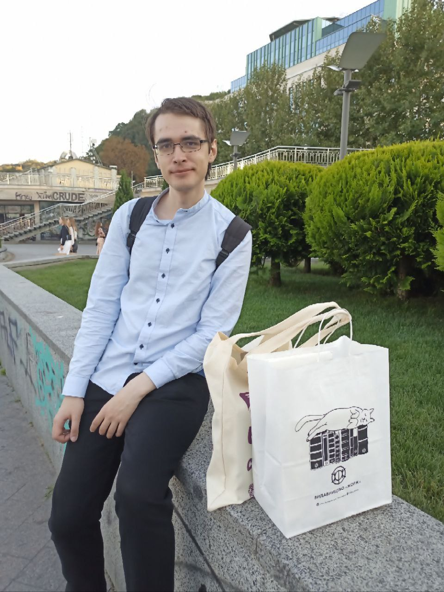
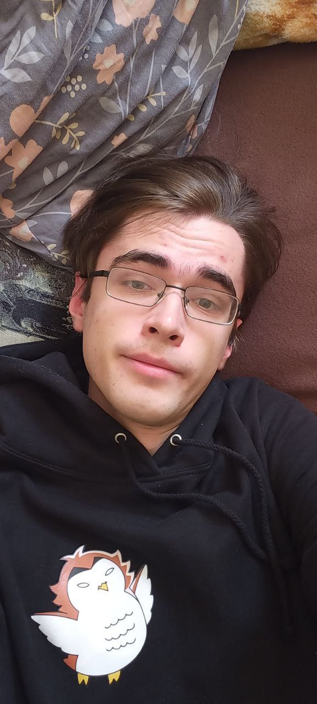

От він, козляктус звичайний.
Колючий козел🐐.
Але я любя, ти ж нов.
Ю нов, що...
|
Ти найфайніша людина яку я знаю |

Ти найкрутіший гітарист |
Ти моє натхнення 
|

Ти моя сила та віра |
Ти моя підтримка |

Ти моє щастя |
Ти причина моєї радості кожного дня 
|
Ти причина не здаватись |
Ти причина ставати кращою 
|

Ти моє кохання |
Ти моє все 
|
Трохи про козляктуса
Заховав свою колючість я ж бачу. Окей, я вже тебе закібербулила, заарбузила, досить. ДР все ж таки. Хоча арбузіння ніколи не буде достатньо:)))))

Перша скинута мені твоя фотка.
Ще й із Сальниковим ойойой🙂🙃
Зразу видно занята людина
в щасливих стосунках
А це вже перша фотка зроюблена спешіалі фор мі, і тоже приховуєш свою колючість. А ще ти такий лисік тут

Соу, май діар, важко перейти на серйозну ноту, але я спробую.
Що ж, хочу щоб ти знав як я тебе ціную та лублу.
Ти - найкраща людина для мене, і я щаслива шо ми тугезер.
Дякую за все, що ти для мене робиш, за підтримку кожен день,
шо я все-таки колись пройду курси і шо в мене все вийде з ворком,
ця підтримка +1000 для впевненості та і настрою.
Без ю це було б набагато складніше.
Хочу подякувати за твою доброту,
що ніколи не енгришся, не обіжаєшся,
намагаєшся одразу вирішити проблему. Дякую шо навчив толкати пхпх, одразу розбиратись в таких ситуаціях.
Кютно, коли називаєш мене кютними прізвиськами саншайн,
літл стар, совенятко, 1000500 різних файних прикметників до гьорл
і багато інших.
Ти часто кажеш як тобі зі мною пощастило.
Але і мені також з тобою пощастило,
хоч і не кажу цього.
Але єс, пощастило, ще й дуже:) Ти робиш навіть найскладніший
день легшим своєю присутністю в чаті.
Ти піднімаєш настрій,
або просто
вислуховуєш всі мої проблеми і радиш як краще зробити,
жалієш мене, кажеш яка я потужна і шо в мене все вийде.
Це дуже і дуже цінно. Дякую, що завжди поруч.
Дякую за всі ті теплі слова, да, я не лише про щоденні слова пхпх, більше маю на увазі ті стіни тексту, коли писав їх коли я вже йшла спати. Читати зранку це так кютно. І так відчувається що це щиро, з любов'ю, відчуття шо мене лублять пхпхх

Обнімашки (тут мав би бути італіський жест рукою, але уви, нема)
Які ж вони затишні, теплі та рідні. Як же файно отак от заритись в них.
А особливо коли валяємось. Це взагалі щось на неймовірному.
Отак би хагатись цілий дей
і нікуди не спішити. Сун так і буде)
Що найбільше шикарно в наших відносинах, так це те, що ми взагалі не сумніваємось один в одному. Все стабільно і не похитно. Це так файно, коли знаєш, що поруч є людина, якій можна довіряти без жодних "але" чи "а раптом". І файно шо ми не перевіряємо і не доводимо щось один одному (ну не в плані спору, оф кусь, ахах. Там все вирішується чітко з аргументами). Я маю на увазі те, що є впевненість, що все буде добре і жодної думки про те шо може шось піти не так.
Хоч це і не значне, але також дуже цінно, дякую що все мені пояснюєш,
або повторюєш в 15 раз без нервів, бо баба глуха не чує.
Не кажеш шось типу "Як ТаКоГо МоЖнА нЕ зНаТи?!" чи "Ти Шо ГлУхА?!".
Не, ну, в якості арбузіння то да, бувало шось схоже пхпх, але точно не всерйоз.
Сенк ю за це)
І це так файно і кютно шо ти знаєш мої вподобання. Знаєш всіх основних персонажів хайкью, шипериш їх разом зі мною, дивишся всі едіти які я скидаю і коментуєш їх. Навіть вгадуєш сам моїх крашів пхпх. Знаєш мене краще за мене:)


І дуже дякую за те, що ти мій букдилер ахах.
Дякую за кожен подарований бук, за солодке, за мак, за всі гіфти,
за отакі раптові зустрічі, коли приїжджав до мене без попередження
і завалював солодким пхпх. Це настільки мииилоооо.
І за те шо вже настоюєш ахахах. Я навчила)
(Моя улюблена фотка:)) І врешті решт, хочу подякувати тобі за тебе, що ти такий, який ти є. Я тебе дуже сильно люблю і ціную. Я щаслива віз ю, сун ми зможемо зробити все те, що напланували, будемо лів тугезер, а потім вже і далі здійснювати наші плани, мрії та задуми. Все у нас буде файно 8888%. *Біп в носа:3
